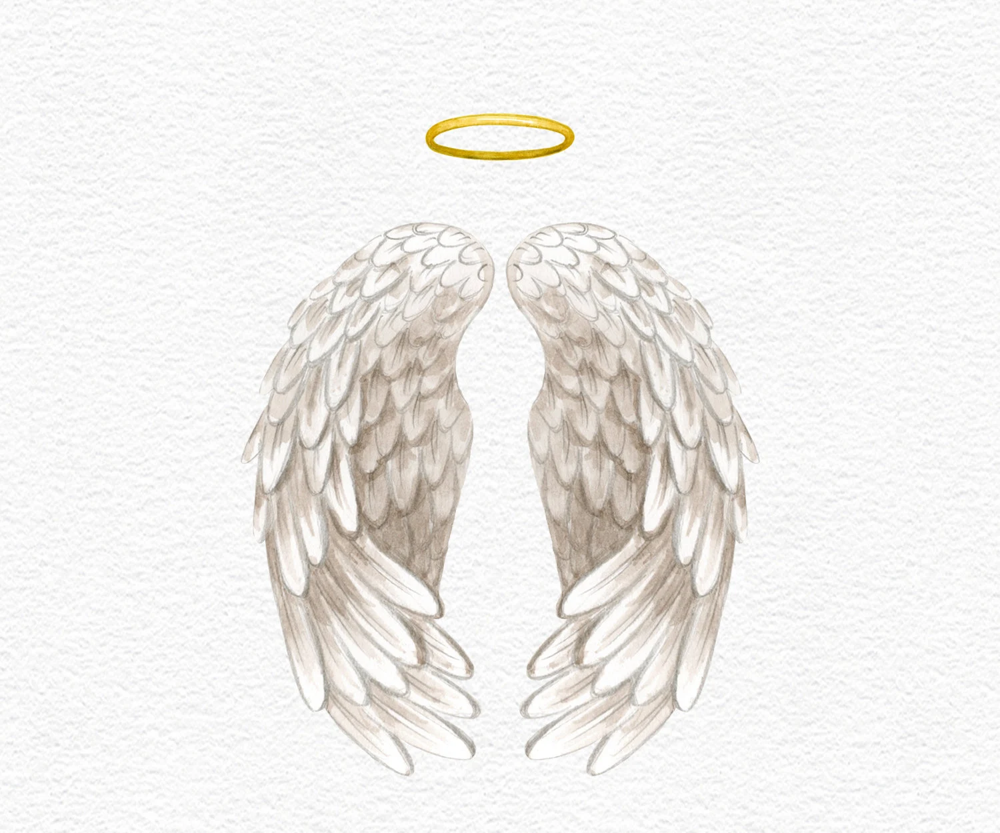
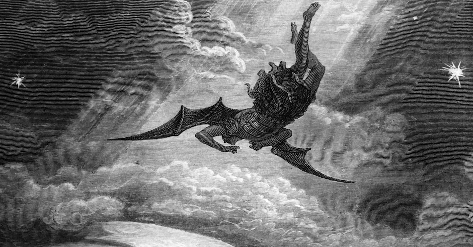
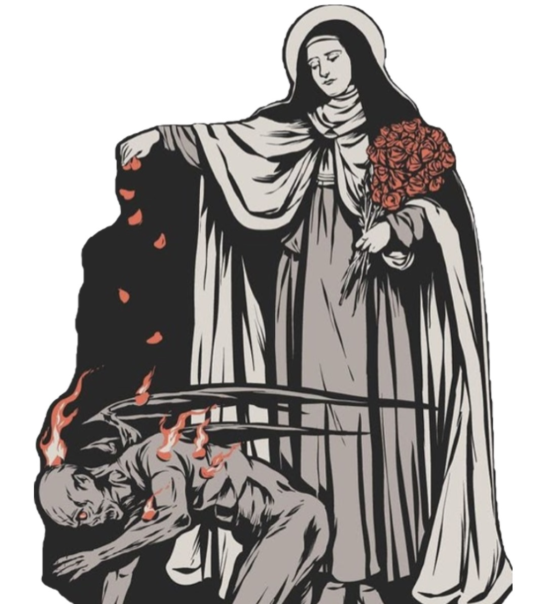

Saints
A Saint is a person in heaven, (officially recognized by the church or not), who lived a heroically virtous life, offered their life for others, or were martyred for the faith. There are 3 steps a person must pass to be offically delcared a Saint and recognized by the universal church. The title is formally given to a person once canonized by the Church as sharing eternal life with God. They are humans who we should look up to and try to imitate as best we can!
Demons
The term demon comes from the Greek word daimōn, which means "supernatural being' or "spirit". Demons are fallen angels, who are evil spirits. They are angels who oppose God's will, are under Satan's control and are hostile toward humans. They especially enjoy tempting and at times visually appearing to many Saints throughout history to steer them off the path of God. People with strong faith are the ones they love to attack as these can bring more people to God. They are known to manifest through many forms, sometimes visual but not all the time. Nonetheless, one should never fear demons as they have already been defeated and have no true power. As these Saints prove!
Significance
As we will learn from these brave souls, who lived extraordinary lives, demons are not something to be afraid of if we have God in our lives. Their strong faith helped them overcome these manifestations and show us that we can also deal with our life's problems. They bravely faced off against these manifestations and instead of growing in fear they grew closer to the Lord. Making the demons more upset at their failure. Let us then anger the demons by living holy lives.